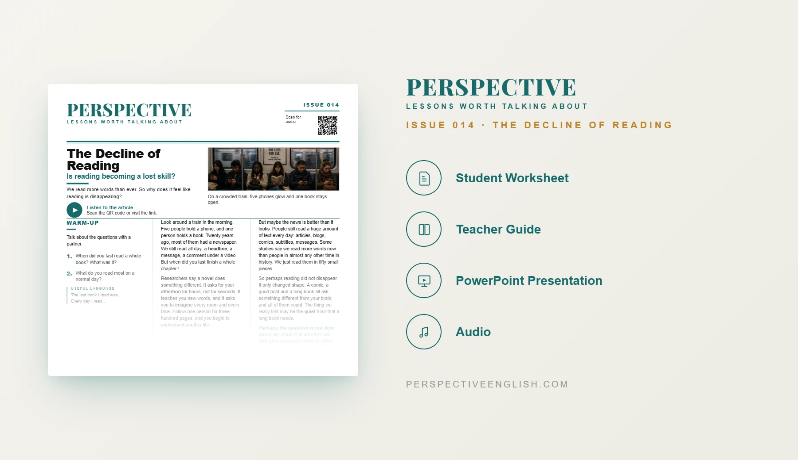

ISSUE 014
The Decline of Reading ESL Lesson
Is reading becoming a lost skill?
A ready-to-teach A1–A2 ESL lesson exploring changing reading habits, books, screens and attention, with reading, listening, vocabulary, discussion and speaking activities.
CHOOSE YOUR LEVEL
Collection 02 includes Issues 011–015.
LESSON PREVIEW

ABOUT THIS LESSON
About This Beginner The Decline of Reading ESL Lesson
People still read every day, but much of that reading now happens in short bursts on phones and screens. Long books and quiet reading have to compete with messages, videos and constant notifications.
This A1–A2 lesson uses accessible English to explore changing reading habits, why long reading can feel difficult and whether books still matter in a screen-filled world.
Students compare different kinds of reading, discuss when and why they read and defend choices about how schools and individuals can encourage more reading.
FROM THE ARTICLE
WHAT'S INCLUDED
What's Included in the A1–A2 Decline of Reading Lesson?
- Magazine-style A1–A2 ESL student worksheet
- Original reading-habits article with audio recording
- Five accessible vocabulary items and comprehension questions
- Discussion about books, screens, attention and reading habits
- One Each critical-thinking activity
- Reading-habits speaking challenge
- 60–100 word opinion-writing task
- Teacher guide and complete answer key
- Ready-to-use classroom presentation
GET THE COMPLETE LESSON
Ready to Teach The Decline of Reading?
Get the complete A1–A2 The Decline of Reading ESL lesson individually or save with Perspective Collection 02.
Secure checkout and instant digital delivery through Payhip.